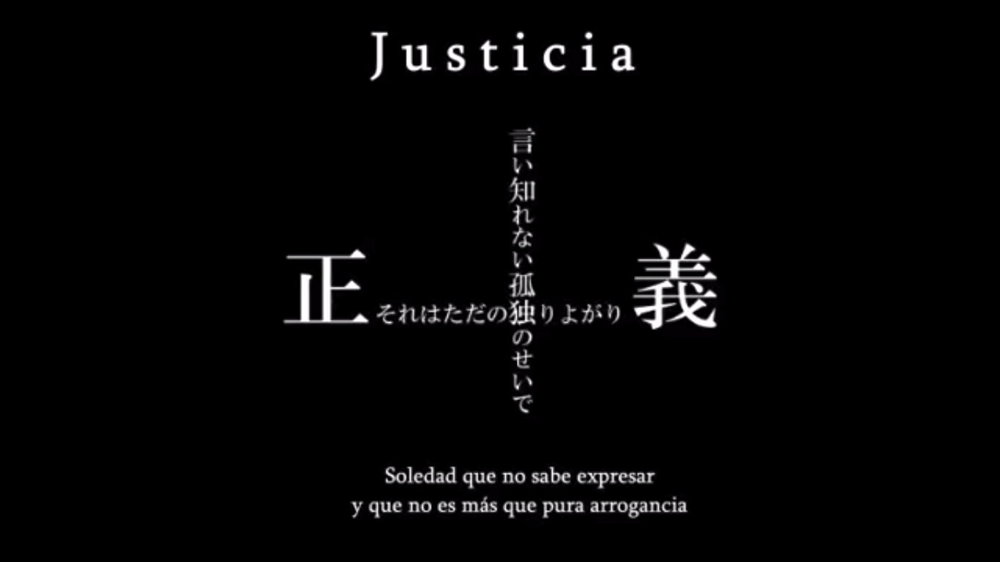
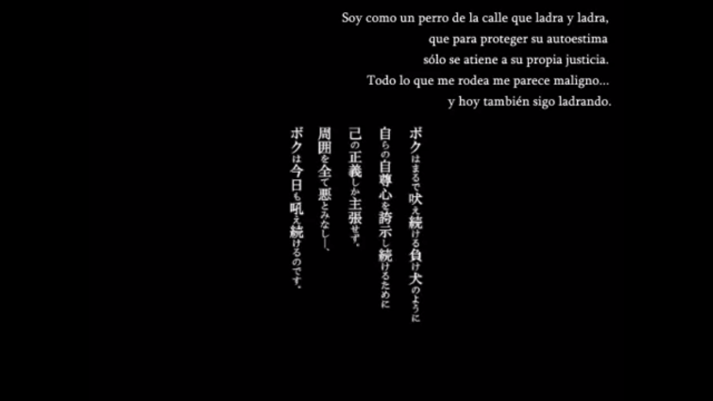
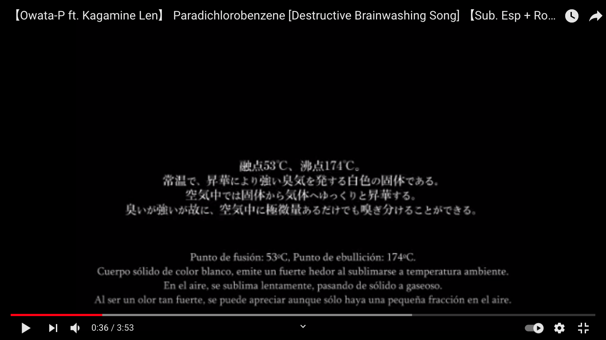
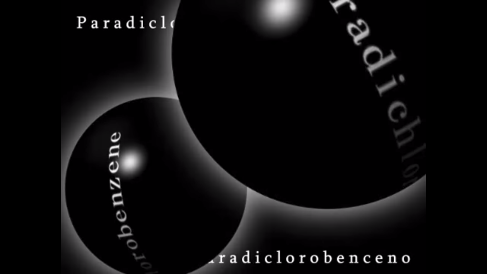
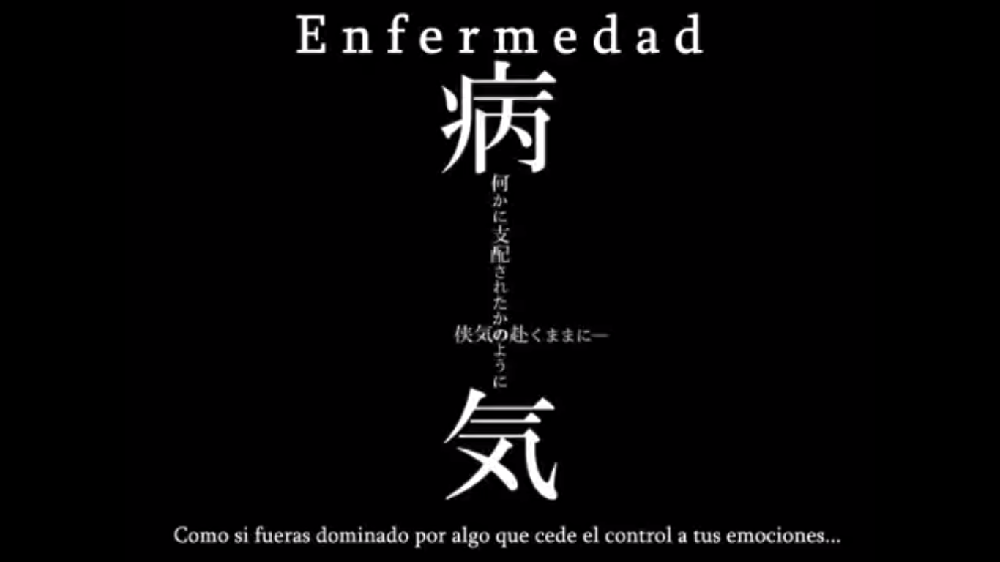
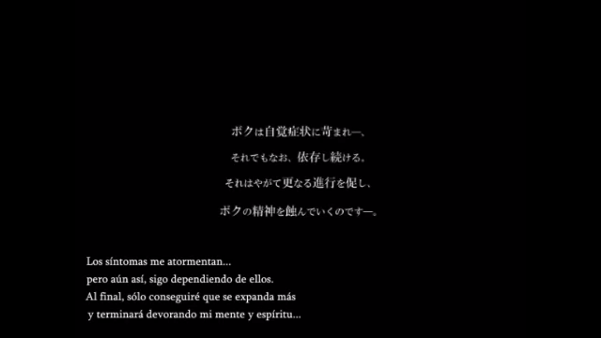
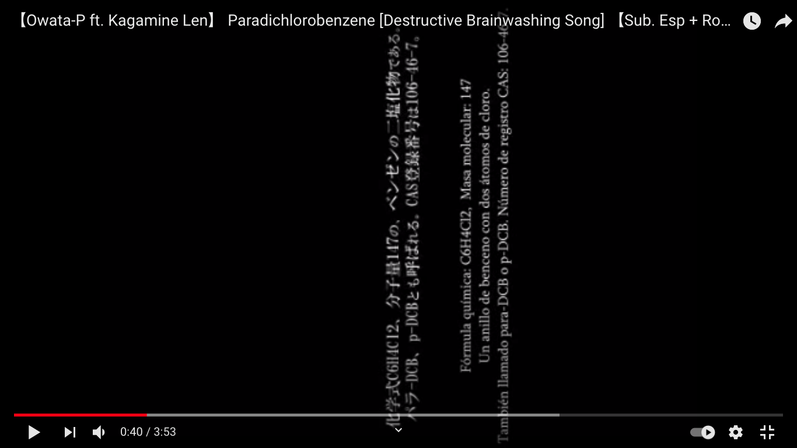
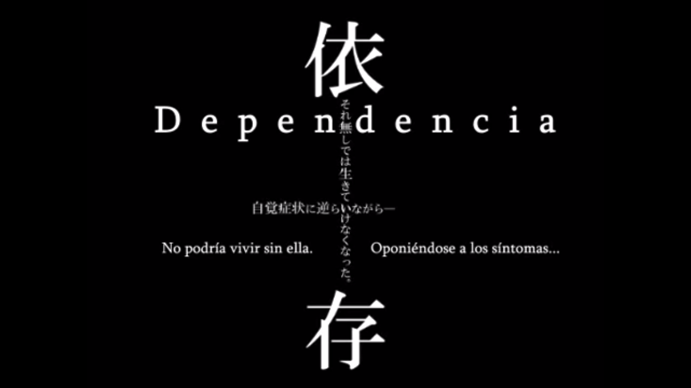
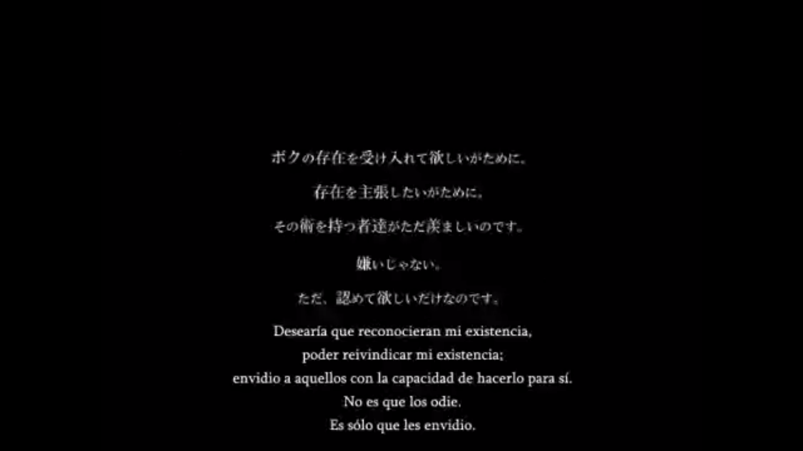

| A | B | C | D | E | F | G | H | I | J | K | L | M | N | O | P | Q | R | S | T | U | |
|---|---|---|---|---|---|---|---|---|---|---|---|---|---|---|---|---|---|---|---|---|---|
1 | C | Am | intro | ||||||||||||||||||
2 | Am7 Fmaj7 Am7 Fmaj7 | vi7 - IV7 - vi7 - IV7 | i7 - VI7 - i7 - VI7 | ||||||||||||||||||
3 | Am7 Em7 F G/C G | vi7 - iii7 - IV - V/I - V | i7 - v7 - VI - VII/III -VII | el G/C es como un Cmaj7,9,no3 | According to Owata-P, the lyrics make up a code. All of them are coded except the last four lines: "Toluene is a song of riddle-solving/Wordplay of time-wasting/When all of the meaning is known/What sort of face would you like?" | ||||||||||||||||
4 | Am7 Em7 F G/C G/Bb | vi7 - iii7 - IV - V/I - V/viib | i7 - v7 - VI - VII/III -VII/iib | el G/Bb es raro es poner la 3era menor en el bajo cuando el acorde es mayor | si paradichlorobeznene es un perro antichlorobenzene e sun gato? toluene es el cerdo? | paradichlorobenzene empieza con una pantalla de oprdenador encendiéndose y luego la llena de "envidia" al final y paradichlorobenzene cierra borrando toda la envidia y cerrando el ordenador | toluene empieza con un como fast-forward del video de paradichlorobenzene y acaba con esta frase de "no romperemos sin entender nada?" y con las letras asi marcadas en rojo: | y dice tambien que esta cancion tiene sentido link animelyrics? link vocaloidlyrics link w.atwiki | |||||||||||||
5 | - | トルエン トルエン トルエン | Toruen toruen toruen | トルエン トルエン トルエン | Toluene. Toluene. Toluene. | ||||||||||||||||
6 | トルエン トルエン トルエン | Toruen toruen toruen | トルエン トルエン トルエン | Toluene. Toluene. Toluene. | |||||||||||||||||
7 | ボクは何の為に歌う？ パラジクロロベンゼン | Boku wa nan no tame ni utau? parajikurorobenzen | con qué objetivo canto? paradichlorobenzene | al decir "paradichlorobenzene" salen o como trivia sobre el componente | Am F G C C/B | vi - IV - V - I - I/7maj | i - VI - VII - III - III/ii | es muy raro poner la 7a mayor abajo!!!! | 苦しくて 悲しくて 悔しくて やめたくて | kurushikute kanashikute kuyashikute yametakute | アヲダイクトタミレハ | Awodaikutotamireha[1] | bokotaikutodamitoba | ボコタイクトダミトバ | BO BA | ********** | |||||
8 | ただ意味も理解せずに歌う パラジクロロベンゼン | Tada imi mo rikai sezu ni utau parajikurorobenzen | solo canto sin siquiera comprender el sentido paradichlorobenzene | o sale el componente en el video | Am F G C C/B | vi - IV - V - I - I/7maj | i - VI - VII - III - III/ii | creo que aprovecha que el IV de la mayor sea el VI de la menor | それすらも 許されず なにもかも 失うだけで | sore sura mo yurusarezu nani mo ka mo ushinau dake de | アワキエトグニソチン | Awakietogunisochin | noakiamorumisojimo | ノアキアモルミソジモ | ********** | ||||||
9 | そう答え求め走り出した パラジクロロベンゼン | Sou kotae motome hashiri dashita parajikurorobenzen | y así comienzo a correr pidiéndo la respuesta paradichlorobenzene | Am F G C C/B | vi - IV - V - I - I/7maj | i - VI - VII - III - III/ii | para generar esta incertidumbre sobre qué escala usa | 辛過ぎて 憎過ぎて 虚しくて 消したくて | tsurasugite nikusugite munashikute keshitakute | テニロボランドロフシ | Teniroborandorofushi | debinononaworadazoshi | デビノノナヲラダゾシ | ********** | |||||||
10 | その先に辿り着いて何も ないと知ったけど | Sono saki ni tadori tsuite nanimo nai to shitta kedo saa | aunque sabia de antes que al llegar allí no hay nada, va | Am F G Am | vi - IV - V - I - vi | i - VI - VII - i | なにもかも 投げ出して 飛び出して 喚き叫ぶよ！ | nani mo ka mo nagedashite tobidashite wamekisakebu yo! | レガロボズンキウラデ | Regarobozunkiurade | renatoyotsunkiugate | レナトヨツンキウガテ | RE | ********** | |||||||
11 | |||||||||||||||||||||
12 | さあ 歌いましょう踊りましょう パラジクロロベンゼン | saa utaimashou odorimashou parajikurorobenzen | va, cantemos, bailemos paradichlorobenzene | Am F G C C/B | vi - IV - V - I - I/7maj | i - VI - VII - III - III/ii | キミはなにも知らずに 夜の街を駆けるよ | kimi wa nani mo shirazu ni yoru no machi o kakeru yo | ロタオニククポカナサ | Rotaonikukupokanasa | ボタオリククモカガサ | BO SA | ********** | ||||||||
13 | さあ 喚きましょう叫びましょう パラジクロロベンゼン | saa wamekimashou sakebimashou parajikurorobenzen | va, chillemos, gritemos paradichlorobenzene | Am F G C C/B | vi - IV - V - I - I/7maj | i - VI - VII - III - III/ii | ボクはなにも言わずに それをただ見てるだけ | boku wa nani mo iwazu ni sore o tada mite'ru dake | エニエントハジマウキ | Enientohajimauki | テイウントデミノウキ | ********** | |||||||||
14 | 犬も猫も牛も豚もみな パラジクロロベンゼン | inu mo neko mo ushi mo buta mo mina parajikurorobenzen | el perro también, el gato también, el cerdo también, todos paradichlorobenzene | Am F G C C/B | vi - IV - V - I - I/7maj | i - VI - VII - III - III/ii | チープな言葉並べ ゴールは何処にあるの？ | chiipu na kotoba narabe gooru wa doko ni aru no? | ヤブコナシオトアウア | Yabukonashiotoaua | ダモラタシノノカテガ | ********** | |||||||||
15 | さあ 狂いましょう眠りましょう 朽ち果てるまで さぁ！ | saa kuruimashou nemurimashou kuchihateru made saa! | va, enloquezcamos, durmamos hasta pudrirnos y desaparecer, ahora | Am F G Am | vi - IV - V - I - vi | i - VI - VII - i | ルールはそこに無くて 脆く朽ち果ててゆく | ruuru wa soko ni nakute moroku kuchihatete yuku | ニマギカテカイン | Nimagikatekain | ニナキタメタリン | NI | ******** | ||||||||
16 | en el 1:52 aprox sale un bemol | ||||||||||||||||||||
17 | me recuerda a cuando en nitrobenzen canta los bemoles | Am Bb Am G | vi - VIIb - vi - V | i - iib - i - VII | トルエン トルエン トルエン | Toruen toruen toruen | トルエン トルエン トルエン | Toluene. Toluene. Toluene. | |||||||||||||
18 | que son los modificadores que bajan medio tono | Am Bb Am G | vi - VIIb - vi - V | i - iib - i - VII | トルエン トルエン トルエン | Toruen toruen toruen | トルエン トルエン トルエン | Toluene. Toluene. Toluene. | |||||||||||||
19 | su nota acompañante | ||||||||||||||||||||
20 | ルールがボクは嫌で ただ縛られたくなくて | ruuru ga boku wa iya de tada shibararetakunakute | no me gustan las reglas tan solo no quiero ser atado | Am Bb Am Gm | vi - VIIb - vi - v | i - iib - i - vii | ボクはそして語る この世の全てを正すんだと | boku wa soshite kataru kono yo no subete o tadasu n da to | この歌に意味はあるの？ | Kono uta ni imi wa aru no? | この歌に意味はあるの？ | Does this song have a meaning? | |||||||||
21 | だからボクは逃げ出して 後先の事は忘れ | dakara boku wa nigedashite atosaki no koto wa wasure | así pues voy a huir lo que venga después olvidé | Am Bb Am Gm | vi - VIIb - vi - v | i - iib - i - vii | ボクは野良猫に騙る ボクなら全てを正せるよと | boku wa noraneko ni kataru boku nara subete o tadaseru yo to | この詩に意味は… | Kono uta ni imi wa… | この詩に意味は… | The meaning to this verse... | |||||||||
22 | 指図されるのが嫌で 少し悪になりたくて | sashizu sareru no ga iya de sukoshi aku ni naritakute | no me gusta ser dirigido quiero ser un poco malo | Am Bb Am Gm | vi - VIIb - vi - v | i - iib - i - vii | 出来もしない誓い振りかざし 独りよがりに酔い痴れる | deki mo shinai chikai furikazashi hitori-yogari ni yoishireru | この歌に意味はあるの？ | Kono uta ni imi wa aru no? | この歌に意味はあるの？ | Does this song have a meaning? | |||||||||
23 | 深夜家を抜け出して 夜の街を走り抜け | shin'ya ie o nukedashite yoru no machi wo hashirinuke | tarde en la noche salgo de casa corro por la ciudad de la noche | Am Bb Am Gm | vi - VIIb - vi - v | i - iib - i - vii | みんな知ってる 理解してる だからボクは今日も | minna shitte'ru rikai shite'ru dakara boku wa kyou mo | この詩に意味は… | Kono uta ni imi wa… | この詩に意味は… | The meaning to this verse... | |||||||||
24 | あるよ | Aru yo | あるよ | does exist. | |||||||||||||||||
25 | 何の為に生きるのか ボクは野良猫に話しかけた | nan no tame ni ikiru noka boku wa noraneko ni hanashikaketa | con qué objetivo canto? le pregunto a un gato abandonado | F G Em Am | IV - V - iii - vi | VI - VII - v - i | 晒されて 壊されて 錆ついて 朽ち果てて | sarasarete kowasarete sabitsuite kuchihatete | アスミスズナアナミエツニ | Asumisuzunaanamietsuni | アスミスズナアナミエツニ | A NI | ********** | ||||||||
26 | 猫は何も答えずに ただ見下した眼でボクを見た | neko wa nanimo kotaezu ni tada mikudashita me de boku o mita | el gato no responde nada solo me mira con ojos condescendientes | F G Em Am | IV - V - iii - vi | VI - VII - v - i | ありもしない 噂さえ 流されて 真となるよ | ari mo shinai uwasa sae nagasarete makoto to naru yo | アフガナフアオロフロキヌ | Afuganafuaorofurokinu | アフガナフアオロフロキヌ | ********** | |||||||||
27 | 飲めもしないコーヒー飲み干して 曇り空を見上げたんだ | nome mo shinai koohii nomihoshite kumorizora o miagetanda | me bebo un café que no debo tomar miré al cielo nublado | Bb Am | VIIb - vi | IIb - i | 嘘でもいい 構わない ボクたちが 正しくて | uso de mo ii kamawanai bokutachi ga tadashikute | オソビマベルスンビンサニ | Osobimaberusunbinsani | オソビマベルスンビンサニ | ********** | |||||||||
28 | 今のボクに何が出来る？ それすらわからない | ima no boku ni nani ga dekiru? soresura wakaranai | qué puede hacer mi yo de ahora? ni eso siquiera sé | D E | II - III | IV - V | キミたちの 罪深い 背徳を 捻り潰すよ！ | kimitachi no tsumibukai haitoku o hineritsubusu yo! | イズクミニバハビシニアス | Izukuminibahabishiniasu | イズクミニバハビシニアス | SU | ********** | ||||||||
29 | |||||||||||||||||||||
30 | だからボクは歌い叫ぶんだ パラジクロロベンゼン | dakara boku wa utai sakebunda parajikurorobenzen | por eso grito esta canción paradichlorobenzene | Am F G C C/B | vi - IV - V - I - I/7maj | i - VI - VII - III - III/ii | この歌に意味はあるの？ この詩に意味はないよ | kono uta ni imi wa aru no? kono uta ni imi wa nai yo | アルブムクスタモルニカス | Arubumukusutamorunikasu | アルブムクスタモルニカス | A | ********** | ||||||||
31 | その意味も理解せずに喚く パラジクロロベンゼン | sono imi mo rikai sezu ni wameku parajikurorobenzen | sin entender su significado yo chillo paradichlorobenzene | Am F G C C/B | vi - IV - V - I - I/7maj | i - VI - VII - III - III/ii | この歌に罪はあるの？ この詩に罪はないよ | kono uta ni tsumi wa aru no? kono uta ni tsumi wa nai yo | ササチエフルキビンカロウ | Sasachiefurukibinkarou | ササチエフルキビンカロウ | ********** | |||||||||
32 | これでキミは満足出来るの？ パラジクロロベンゼン | kore de kimi wa manzoku dekiru no? parajikurorobenzen | con esto estás satisfecho? paradichlorobenzene | Am F G C C/B | vi - IV - V - I - I/7maj | i - VI - VII - III - III/ii | あの歌に意味はあるの？ あの詩に意味はないよ | ano uta ni imi wa aru no? ano uta ni imi wa nai yo | セキブミナワキヤンカサヌ | Sekibuminawakiyankasanu | セキブミナワキヤンカサヌ | ********** | |||||||||
33 | no sé si es el cantante quien las rompe con el objetivo de que cambie algo o observa como se rompen y pregunta si de esta manera cambiará algo | 掟規則破ったらキミは 何か変わるの？ | okite kisoku yabuttara kimi wa nanika kawaru no? | rompiendo leyes, romiendo normas, tu cambiará algo? | Am F G Am | vi - IV - V - I - vi | i - VI - VII - i | あの歌に罪はあるの？ あの詩の罪は... | ano uta ni tsumi wa aru no? ano uta no tsumi wa | タマハムナジナハジジスル | Tamahamunajinahajijisuru | タマハムナジナハジジスル | TA RU | ********** | |||||||
34 | desde aqui el パラジクロロベンゼン está censurado en los lyrics (＊＊＊＊＊＊＊＊＊＊) como si fuese una contraseña | ||||||||||||||||||||
35 | そう 誰でもいいぶちまけたい パラジクロロベンゼン | sou daredemo ii buchimaketai parajikurorobenzen | si, al final solo quiero vomitárselo a quien sea paradichlorobenzene | Am F G C C/B | vi - IV - V - I - I/7maj | i - VI - VII - III - III/ii | (アンチアンチアンチクロロベンゼン) | (Anchi anchi anchikurorobenzen) | ソコマメムキノカアジトリ | Sokomamemukinokaajitori | ソコマメムキノカアジトリ | SO RI | ********** | ||||||||
36 | 悪を叩く正義ふりかざす パラジクロロベンゼン | aku wo tataku seigi furikazasu parajikurorobenzen | luchar contra el mal blandiendo la justicia paradichlorobenzene | Am F G C C/B | vi - IV - V - I - I/7maj | i - VI - VII - III - III/ii | (アンチアンチアンチクロロベンゼン) | (Anchi anchi anchikurorobenzen) | ウマエラヒズノオゼンコリ | Umaerahizunoozenkori | ウマエラヒズノオゼンコリ | ********** | |||||||||
37 | 正義盾にストレス解消 パラジクロロベンゼン | seigi tate ni sutoresu kaishou parajikurorobenzen | liberar estrés tras el escudo de la justicia paradichlorobenzene | Am F G C C/B | vi - IV - V - I - I/7maj | i - VI - VII - III - III/ii | (アンチアンチアンチクロロベンゼン) | (Anchi anchi anchikurorobenzen) | タアミルクヲウクチヤスス | Taamirukuwoukuchiyasusu | タアミルクヲウクチヤスス | ********** | |||||||||
38 | 周り止めるボクら気付かない 愚かな行為 | mawari tomeru bokura kizukanai oroka na koui | todo se para sin nosotros darnos cuenta una conducta estúpida | Am F G Am | vi - IV - V - I - vi | i - VI - VII - i | (クロロクロロクロクルッテル) | (Kuroro kuroro kuro kurutteru) | ウキロクゴノヒチジマカス | Ukirokugonohichijimakasu | ウキロクゴノヒチジマカス | U | ********** | ||||||||
39 | |||||||||||||||||||||
40 | この歌に意味はあるの？ この詩に意味はないよ | kono uta ni imi wa aru no? kono uta ni imi wa nai yo | esta canción tiene sentido? esta canción no tiene sentido | F C | IV - I | VI - III | ボクはそして気付く 所詮はなにも生み出さないと | boku wa soshite kizuku shosen wa nani mo umidasanai to | タモスキヌクプロタヌタニ | Tamosukinukupurotanutani | タモスキヌクプロタヌタニ | NI | ********** | ||||||||
41 | この歌に罪はあるの？ この詩に罪はないよ | kono uta ni tsumi wa aru no? kono uta ni tsumi wa nai yo | esta canción es culpable? //tsumi es sin, algo no justo esta canción no es culpable | Am Em | vi - iii | i - v | キミの生きる価値はなに？ 野良猫は水に突き落とした | kimi no ikiru kachi wa nani? noraneko wa mizu ni tsukiotoshita | レホドプラネキヌクラデデ | Rehodopuranekinukuradede | レホドプラネキヌクラデデ | ********** | |||||||||
42 | ベンゼンに意味はあるの？ ベンゼンに意味はないよ | benzen ni imi wa aru no? benzen ni imi wa nai yo | esta canción tiene sentido? esta canción no tiene sentido | F C | IV - I | VI - III | 意味のない言葉に踊らされ 振り廻され失うんだ | imi no nai kotoba ni odorasare furimawasare ushinau n da | フルマガタスシンジカマス | Furumagatasushinjikamasu | フルマガタスシンジカマス | ********** | |||||||||
43 | ベンゼンに罪はあるの？ この歌の意味は・・・ベンゼン | benzen ni tsumi wa aru no? kono uta no imi wa... benzen | esta canción tiene sentido? el sentido de esta canción es... benzene | Am Em | vi - iii | i - v | なにが善だ なにが悪だ もうなにもわからない | nani ga zen da nani ga aku da mou nani mo wakaranai | ウルパミスズフタレバレワ | Urupamisuzufutarebarewa | ウルパミスズフタレバレワ | U WA | ********** | ||||||||
44 | さぁ一緒に狂いましょう | saa issho ni kuruimashou | |||||||||||||||||||
45 | Am Bb Am G | vi - VIIb - vi - V | i - iib - i - VII | ||||||||||||||||||
46 | Am Bb Am G | vi - VIIb - vi - V | i - iib - i - VII | ||||||||||||||||||
47 | |||||||||||||||||||||
48 | ボクはそして気付く 所詮はすべて偽善なんだと | boku wa soshite kizuku shosen wa subete gizen nanda to | y entonces me di cuenta de que al final todo es hipocresía | F G Em Am | IV - V - iii - vi | VI - VII - v - i | ボクはなんの為に歌う？ パラジクロロベンゼン | boku wa nan no tame ni utau? parajikurorobenzen | トルエンは謎解きの歌 | toruen wa nazotoki no uta | トルエンハナゾトキノウタ （トルエンは謎解きの歌） | TO TA | ********** | Toluene is a riddle solving song | |||||||
49 | ボクの生きる価値は何？ 野良猫は水に溺れ死んだ | boku no ikiru kachi wa nani? noraneko wa mizu ni oborejinda | para qué sirve que yo esté vivo? el gato callejero se ahogó en el agua | F G Em Am | IV - V - iii - vi | VI - VII - v - i | ただ意味も理解せずに歌う パラジクロロベンゼン | tada imi mo rikai sezu ni utau parajikurorobenzen | 暇つぶしの言葉遊び | himatsubushi no kotoba asobi | ヒマツブシノコトバアソビ （暇つぶしの言葉遊び） | ********** | A word game to pass time | ||||||||
50 | 空になったコーヒー投げ捨てて 闇に覆われた空を見た | kara ni natta koohii nagesutete yami ni oowareta sora o mita | tiro el vaso vacío de café y miro al cielo envuelto en oscuridad | Bb Am | VIIb - vi | IIb - i | 悪を叩く正義振りかざす パラジクロロベンゼン | aku wo tataku seigi furikazasu parajikurorobenzen | 全ての意味を知った時 | subete no imi o shitta toki | スベテノイミヲシツタイマ （全ての意味を知った今） | ********** | When the meaning of it becomes clear | ||||||||
51 | 今のボクは何をしてる？ それすらわからない | ima no boku wa nani wo shiteru? soresura wakaranai | qué sabe mi yo de ahora? ni eso siquiera sé | D E | II - III | IV - V | 周り止めるボクら気付かない 愚かな行為 | mawari tomeru bokura kizukanai oroka na koui | 貴方はどんな顔をする | anata wa donna kao o suru | アナタハドンナカオヲスル （貴方はどんな顔をする） | A | ********** | I wonder what face will you make | |||||||
52 | もうなんにもわからない | mou nannimo wakaranai | ya no sé nada | F# | IV# | VI# | |||||||||||||||
53 | D | Bm | |||||||||||||||||||
54 | そしてキミはボクを笑うんだ パラジクロロベンゼン | soshite kimi wa boku wo waraunda parajikurorobenzen | y entonces te ries de mí paradichlorobenzene | Bm G A D D/C# | vi - IV - V - I - I/7maj | i - VI - VII - III - III/ii | ありえない 許さない 止まらない この気持ち | arienai yurusanai tomaranai kono kimochi | |||||||||||||
55 | そしてボクはキミを突き飛ばす パラジクロロベンゼン | soshite boku wa kimi wo tsukitobasu parajikurorobenzen | y entonces te mando por los aires paradichlorobenzene | Bm G A D D/C# | vi - IV - V - I - I/7maj | i - VI - VII - III - III/ii | この辛さ この憎さ 貫いて 心を討つよ | kono tsurasa kono nikusa tsuranuite kokoro o utsu yo | |||||||||||||
56 | ボクが正しくてキミは違う パラジクロロベンゼン | boku ga tadashiku kimi wa chigau parajikurorobenzen | yo estoy en lo cierto, tu te equivocas paradichlorobenzene | Bm G A D D/C# | vi - IV - V - I - I/7maj | i - VI - VII - III - III/ii | 苦しくて 悲しくて 虚しくて 消したくて | kurushikute kanashikute munashikute keshitakute | |||||||||||||
57 | 虚無に包まれては消える ぼくが消え去るまで | kyomu ni tsutsumarete wa kieru boku ga kiesaru made | envuelto en la nada, desapareciendo hasta que desaparezca del todo | Bm G A Bm | vi - IV - V - I - vi | i - VI - VII - i | それすらも 許されず 諦めは ボクを救うから | sore sura mo yurusarezu akirame wa boku o sukuu kara | |||||||||||||
58 | |||||||||||||||||||||
59 | さあ 歌いましょう踊りましょう パラジクロロベンゼン | saa utaimashou odorimashou parajikurorobenzen | va, cantemos, bailemos paradichlorobenzene | Bm G A D D/C# | vi - IV - V - I - I/7maj | i - VI - VII - III - III/ii | 嘘でもいい 構わない 許しましょう 認めましょう | uso de mo ii kamawanai yurushimashou mitomemashou | |||||||||||||
60 | さあ 笑いましょう妬みましょう パラジクロロベンゼン | saa waraimashou netamimashou parajikurorobenzen | va, chillemos, gritemos paradichlorobenzene | Bm G A D D/C# | vi - IV - V - I - I/7maj | i - VI - VII - III - III/ii | 笑いさえ 妬みさえ 狂おしく 愛せそうだよ | warai sae netami sae kuruoshiku aisesou da yo | |||||||||||||
61 | ボクもキミも何もかも全部 パラジクロロベンゼン | boku mo kimi mo nanimokamo zenbu parajikurorobenzen | el perro también, el gato también, el cerdo también, todos paradichlorobenzene | Bm G A D D/C# | vi - IV - V - I - I/7maj | i - VI - VII - III - III/ii | 善でもいい 悪でもいい ＊しましょう 眠りましょう | zen de mo ii aku de mo ii [koro]shimashou nemurimashou | |||||||||||||
62 | さあ 狂いましょう眠りましょう 朽ち果てるまで さぁ！ | saa kuruimashou nemurimashou kuchihateru made saa! | va, enloquezcamos, durmamos hasta pudrirnos y desaparecer, ahora | Bm G A Bm | vi - IV - V - I - vi | i - VI - VII - i | もういいよ 疲れたよ ボクたちは 救われますか？ | mou ii yo tsukareta yo bokutachi wa sukuwaremasu ka? | |||||||||||||
63 | |||||||||||||||||||||
64 | Bm C Bm G | vi - VII - vi - IV | i - II - i - VI | ||||||||||||||||||
65 | Bm C Bm G | vi - VII - vi - IV | i - II - i - VI | ||||||||||||||||||
66 | Bm | vi | i | ||||||||||||||||||
67 | |||||||||||||||||||||
68 | link | link | |||||||||||||||||||
69 |  |  |  |  | |||||||||||||||||
70 |  |  |  | ||||||||||||||||||
71 |  |  | |||||||||||||||||||
72 | |||||||||||||||||||||
73 | |||||||||||||||||||||
74 | link | ||||||||||||||||||||
75 | The title, "Paradichlorobenzene" is based off the chemical compound C₆H₄Cl₂. It is a fumigant insecticide and repellent, in other words used to repel or kill bugs. | ||||||||||||||||||||
76 | saga benzeno benzene series | ||||||||||||||||||||
77 | Starting from "Paradichlorobenzene", the songs in the series were always uploaded at the exact same time and date for each year, September 19 at 03:55 AM. It was consistent for four years straight (2009, 2010, 2011, and 2012). | ||||||||||||||||||||
78 | benzene es la therapeutical brainwahttps://www.youtube.com/watch?v=5CzkMf3MYdw&ab_channel=LoreHappyshing song el video ya empieza superweird en plan explicandote the forms of Benzenes, how they are formed, the chemicals, and also other examples of chemicals which are similar to Benzene también existe el video RX benzene donde te explica su uso y tal y mucho trivia sobre el componente (la sube el 3 de septiembre del 2011) que realmente es muy interesante porque te confunde mas en plan es esto util? tengo que leer cosas en la cancion? me está liando y se lo está pasando bien? porque hay momentos en los que lees: "...o eso dicen, pero todo eso da igual, prajnaparamita little girl" esta cancion la llama "little girl-type bainwashing song" | El benceno es un líquido incoloro y muy inflamable de aroma dulce (que debe manejarse con sumo cuidado debido a su carácter cancerígeno), con un punto de ebullición relativamente alto. rice cakes y sea anemones son en cierto modo incoloros? | Los Sutras Prajñaparamita incluyen el Sutra del corazón, el Sutra del diamante, el Sutra de la guirnalda y el Sutra del loto. entonces podemos asumir que cada una de las canciones de esta saga se trata de uno de estos sutras? | y empieza diciendo prajnaparamita, little girl!!! que es como se llaman los sutras de la perfección El término sánscrito prajñā pāramitā se traduce como Perfección de la Sabiduría | |||||||||||||||||
79 | en este explica que la sagabenzene es una trilogia: antichlorobenzene responde a paradichlorobenzene, y toluene a modo de respuesta. no queda claro de qué cuarta cancion habla, tambien dice que igual cambia de opinion y que esperemos su nuevo trabajo en ese sentido (minuto 2:21) añade frases como "bvenzene ni imi ga aru no?, benzene ni imi ga nai yo" que tambien salen en paradichlorobenzene pero es interesante que dice "el significado de esta cancion es prajnaparamita little girl" (minuto 2:39) also RX benzene es con akita neru y yowane haku, dos VIPPALOIDS "vocaloids falsos" | el video es supertranqui, primero una puesta de sol en el mar colores naranjas etc y ahi salen todas las anotaciones sobre el benzeno luego va pasando a paisajes todos naranjas que no ves muy bien en verdad salen letras en japo sobre fondo negro un poco EZFG y una iomagen de len como en un fondo violeta mistico raro no parece triste | y en el estribillo estan rin y len cantando los dos otra vez fondo mistico partituras etc los dos parecen estar bien la verdad es que es raro no se como analizar esto | luego la letra se vuelve supertonta diciendo "rice cakes, sea anemones, benzene, benzene" que se repite en bucle en grupos de 4 repeticiones cuando llegas a la cuarta notas como acaba cada grupo y cuando empiezas otro grupo notas algun cambio (p. ej en el 3er grupo de cuatro se suma una voz que hace harmonías, y en el 4o se añade otra voz que solo hace voces de "a" muy agudas (rin)?) se repite 4x4 veces | |||||||||||||||||
80 | de ahí pasa al "esta cancion tiene sentido? esta cancion no tiene sentido" y vuelve a repetir los versos de antes 8 veces para luego quedarse atascado en repetir la primera parte y acabar con el mismo "prajnaparamita, little girl!!" | ||||||||||||||||||||
81 | |||||||||||||||||||||
82 | |||||||||||||||||||||
83 | nitrobenzene es la ethomusical brainwashing song | sustancia toxica que huele como la mermelada de almendras o un melocotón podrido | se usa para producir paracetamol!!! y gomas, disolventes, insectividas y perfumes baratos | es terrible respirarlo o hacer cualquier cosa con él en plan fatiga, mareos, dolor de cabeza, nauseas y posible carcinógeno en humanos | |||||||||||||||||
84 | después de introducirte todo esto te dice que esto no tiene nada que ver con la canción lol | ||||||||||||||||||||
85 | en el video van saliendo anotaciones al aldo de rin y len que estan espalda con espalda cantando, les salen notasd de la boca hay plantitas en sus pies es muy tranqui el ambiente | a nivel musical es muy bonita con esta flautita tranqui suave, un piano que va marcando acordes y un ritmo asi como cumbia tranqui de fondo | y la cancion es todo el rato Len cantando nitrobenzene y las notas musicales en el orden de los sostenidos y luego el de los bemoles de hecho luego te lo explica (mins 2:00 y 2:09) luego hace scat y te explica qué es el scat (min 2:38) en el 3:12 vuelve al "kono uta ni imi ga aru no? kono uta ni imi ga nai yo" pero luego cierra esto diciendo "kono uta wa nitrobenzene" | ||||||||||||||||||
86 | paradichlorobenzene es la destructive-type brainwashing song | ||||||||||||||||||||
87 | antichlorobenzene es la sin-cleasing type brainwashing song | ||||||||||||||||||||
88 | toluene es la riddle solving brainwashing song |